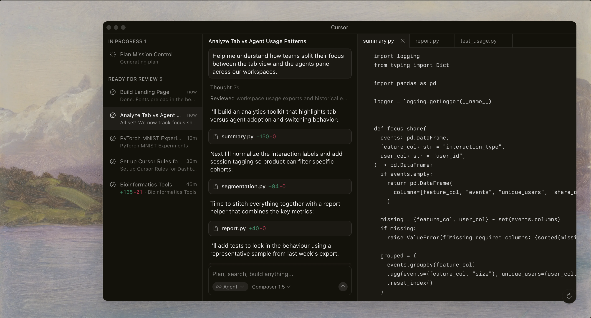
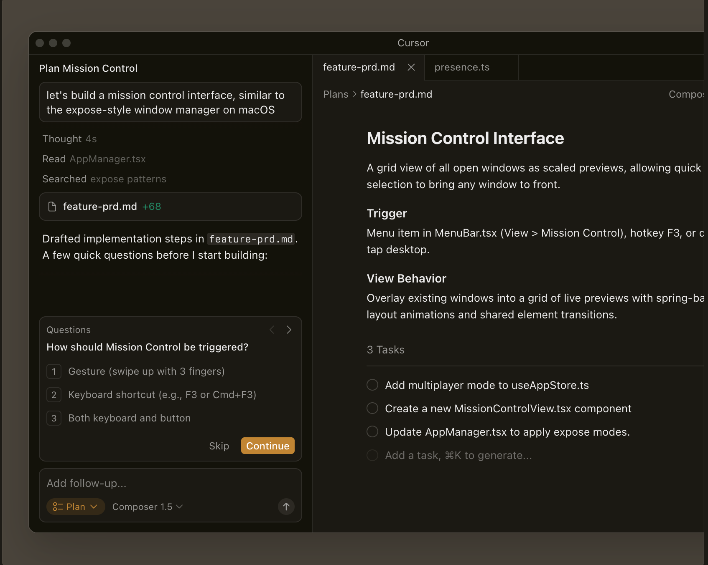
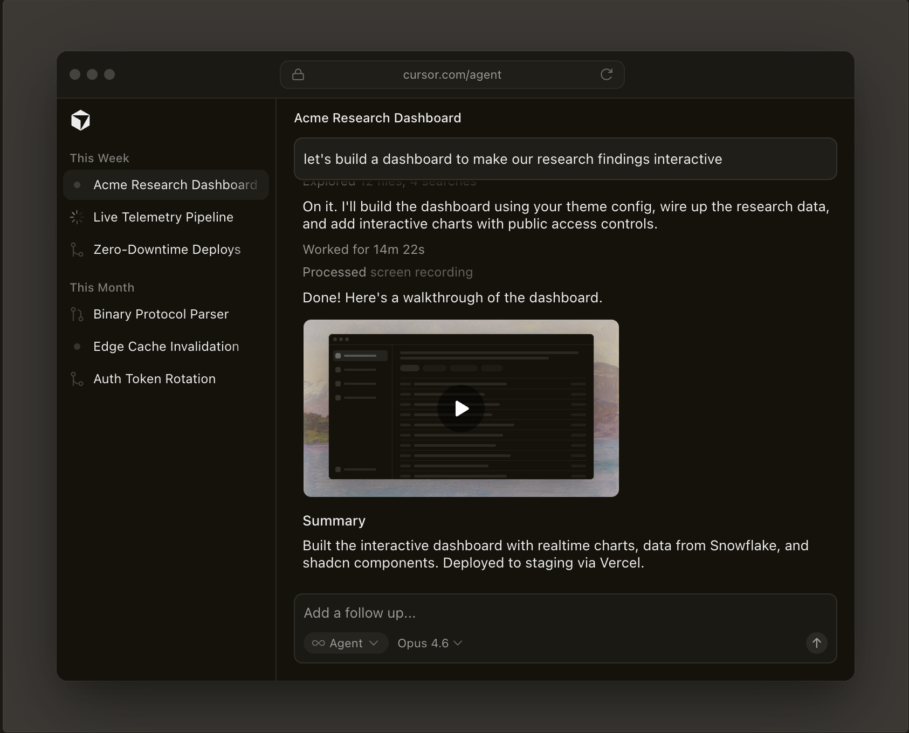
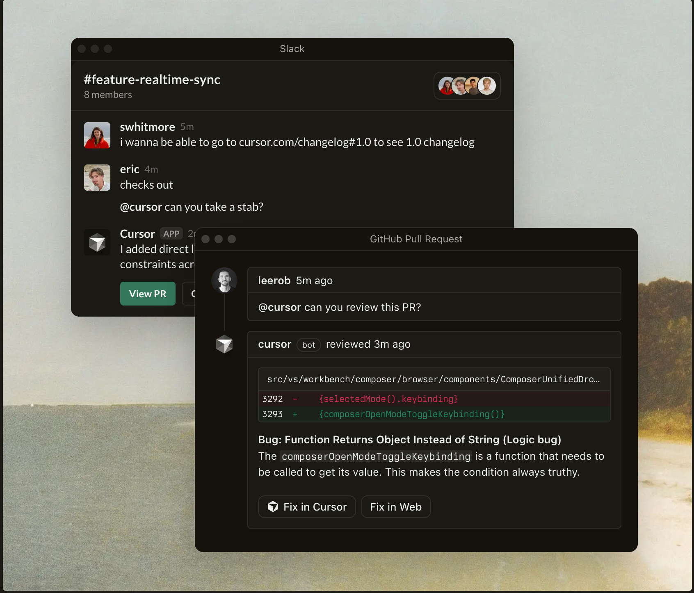
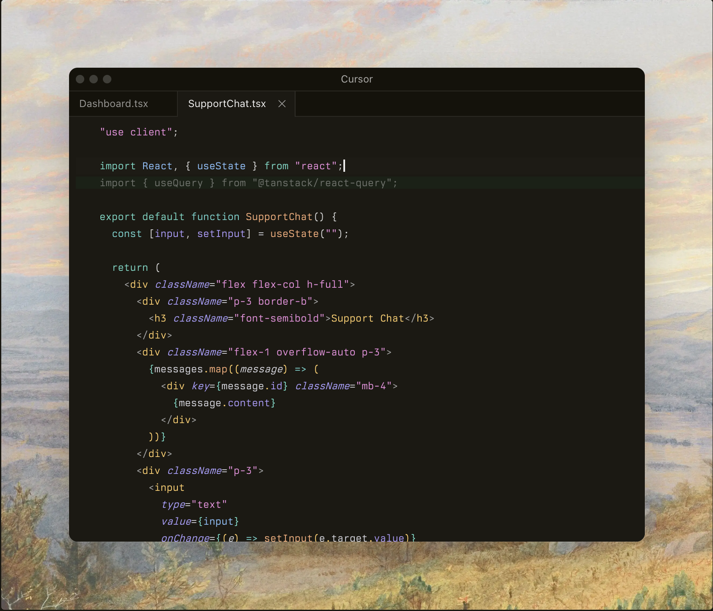
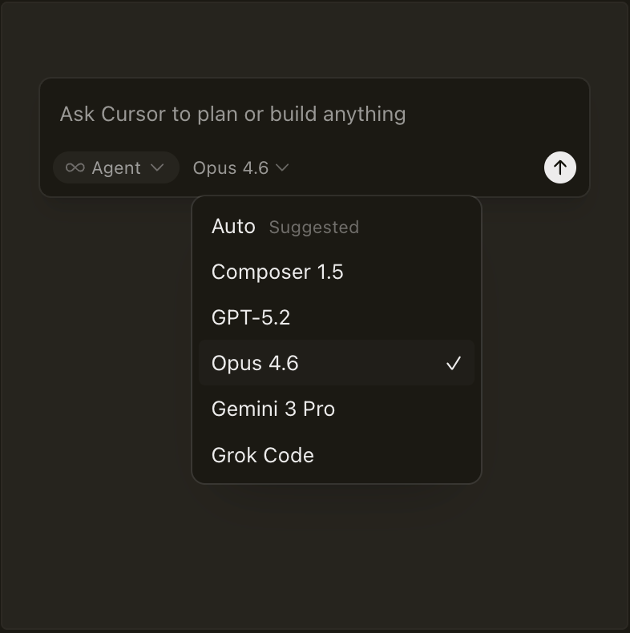

Built to make you extraordinarily productive,
Cursor is the best way to code with AI.

Trusted every day by teams that build world-class software


Agents turn ideas into code
Accelerate development by handing off tasks to Cursor, while you
focus on making decisions.
Learn about agentic development →


Works autonomously, runs in parallel
Agents use their own computers to build, test, and demo features
end to end for you to review.
Learn about cloud agents →
In every tool, at every step
Cursor reviews your PRs in GitHub, collaborates in
Slack, and runs in your terminal.
Learn about Cursor's surfaces →


Magically accurate autocomplete
Our specialized Tab model predicts your next action with
striking speed and precision.
Learn about Tab →
The new way to build software.
“It was night and day from one batch to another, adoption went from single digits to over 80%. It just spread like wildfire, all the best builders were using Cursor.”
Diana Hu
General Partner, Y Combinator
“My favorite enterprise AI service is Cursor. Every one of our engineers, some 40,000, are now assisted by AI and our productivity has gone up incredibly.”
Jensen Huang
President & CEO, NVIDIA
“The best LLM applications have an autonomy slider: you control how much independence to give the AI. In Cursor, you can do Tab completion, Cmd+K for targeted
Andrej Karpathy
CEO, Eureka Labs
“Cursor quickly grew from hundreds to thousands of extremely enthusiastic Stripe employees. We spend more on R&D and software creation than any other undertaking, and there's significant economic outcomes when making that process more efficient.”
Patrick Collison
Co‑Founder & CEO, Stripe
“The most useful AI tool that I currently pay for, hands down, is Cursor. It's fast, autocompletes when and where you need it to, handles brackets properly, sensible keyboard shortcuts, bring-your-own-model... everything is well put together.”
shadcn
Creator of shadcn/ui
“It's definitely becoming more fun to be a programmer. We are at the 1% of what's possible, and it's in interactive experiences like Cursor where models like GPT-5 shine brightest.”
Greg Brockman
President, OpenAI
Stay on the frontier
Use the best model for every task
Choose between every cutting-edge model from OpenAI, Anthropic,
Gemini, xAI, and Cursor.

Use the best model for every task
Choose between every cutting-edge model from OpenAI, Anthropic,
Gemini, xAI, and Cursor.
Use the best model for every task
Choose between every cutting-edge model from OpenAI, Anthropic,
Gemini, xAI, and Cursor.
Changelog
Feb 26 , 2026
Bugbot Autofixs
Feb 24, 2026
Cloud Agents with Computer Use
Feb 18, 2026
CLI Improvements and Mermaid ASCII Diagrams
2.5Feb 17, 2026
Plugins, Sandbox Access Controls, and Async Subagents
See what's new in Cursor →
Cursor is an applied research team focused on building the future
of software development.
Join us →
Recent highlights
Towards self-driving codebases
We're making a part of our multi-agent research harness
available to try today in preview.
Feb 5, 2026
Salesforce accelerates velocity by over 30% and ships
higher-quality code with Cursor
We're making a part of our multi-agent research harness
available to try today in preview.
Feb 5, 2026
Best practices for coding with agents
We're making a part of our multi-agent research harness
available to try today in preview.
Jan 9 , 2026
View more posts →